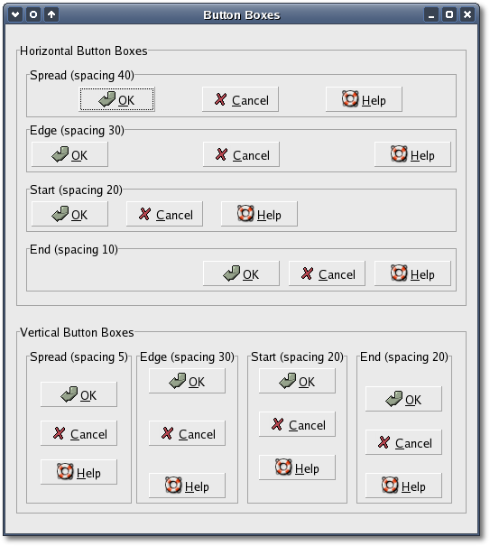

The 'layout' argument sets the method used
to spread the buttons in a
button box. It can be one of the values from the Gtk::ButtonBoxStyle
enum:
- BUTTONBOX_DEFAULT_STYLE
- default packing.
- BUTTONBOX_SPREAD -
buttons are evenly spread across the
ButtonBox.
- BUTTONBOX_EDGE -
buttons are placed at the edges of the
ButtonBox.
- BUTTONBOX_START -
buttons are grouped towards the start of
box,
(on the left for a HBox, or the top for a VBox).
- BUTTONBOX_END -
buttons are grouped towards the end of a
box, (on
the right for a HBox, or the bottom for a VBox).
The 'spacing' argument specifies the number of pixels to put between
the
buttons in the button box. The 'default_spacing' is defined as
-1
and implies zero pixels. The spacing can be set or retrieved using
the inherited Gtk::Box::set_spacing() and Gtk::Box::get_spacing()
methods.
void
set_spacing(int
spacing);
int
get_spacing() const;
The Button Box layout can be set or retrieved using the following
methods, respectively.
void
set_layout(Gtk::ButtonBoxStyle
layout_style);
Gtk::ButtonBoxStyle get_layout() const;
Buttons are added to a Button Box using the usual method,
Gtk::Container::add():
buttonbox->add(*button);
Button
Box Example
Here's an example that illustrates all the different layout settings
for Button Boxes.
The header file for the Button Box example is
<buttonbox.h>:
#include
<xfc/main.hh>
#include <xfc/gtk/button.hh>
#include <xfc/gtk/buttonbox.hh>
#include <xfc/gtk/frame.hh>
#include <xfc/gtk/window.hh>
using
namespace Xfc;
class
ButtonBoxFrame : public
Gtk::Frame
{
public:
ButtonBoxFrame(bool
horizontal, const
char *title, int
spacing, Gtk::ButtonBoxStyle layout);
virtual
~ButtonBoxFrame();
};
class
ButtonBoxWindow : public
Gtk::Window
{
public:
ButtonBoxWindow();
virtual
~ButtonBoxWindow();
};
and the source file is <buttonbox.cc>:
#include "buttonbox.hh"
#include <xfc/gtk/box.hh>
#include <xfc/gtk/stockid.hh>
// ButtonBoxFrame
ButtonBoxFrame::ButtonBoxFrame(bool horizontal, const char *title, int
spacing, Gtk::ButtonBoxStyle layout)
{
set_label(title);
Gtk::ButtonBox *bbox;
if (horizontal)
bbox = new Gtk::HButtonBox;
else
bbox = new Gtk::VButtonBox;
bbox->set_border_width(5);
add(*bbox);
bbox->set_layout(layout);
bbox->set_spacing(spacing);
Gtk::Button *button = new
Gtk::Button(Gtk::StockId::OK);
bbox->add(*button);
button = new Gtk::Button(Gtk::StockId::CANCEL);
bbox->add(*button);
button = new Gtk::Button(Gtk::StockId::HELP);
bbox->add(*button);
}
ButtonBoxFrame::~ButtonBoxFrame()
{
}
// ButtonBoxWindow
ButtonBoxWindow::ButtonBoxWindow()
{
set_title("Button Boxes");
set_border_width(10);
Gtk::VBox *main_vbox = new Gtk::VBox;
add(*main_vbox);
// Horizontal Button Boxes
Gtk::Frame *frame = new Gtk::Frame("Horizontal
Button Boxes");
main_vbox->pack_start(*frame, true, true, 10);
Gtk::Box *box = new Gtk::VBox;
box->set_border_width(10);
frame->add(*box);
ButtonBoxFrame *button_box_frame = new
ButtonBoxFrame(true, "Spread (spacing 40)", 40, Gtk::BUTTONBOX_SPREAD);
box->pack_start(*button_box_frame);
button_box_frame = new ButtonBoxFrame(true, "Edge
(spacing 30)", 30, Gtk::BUTTONBOX_EDGE);
box->pack_start(*button_box_frame, true, true, 5);
button_box_frame = new ButtonBoxFrame(true, "Start
(spacing 20)", 20, Gtk::BUTTONBOX_START);
box->pack_start(*button_box_frame, true, true, 5);
button_box_frame = new ButtonBoxFrame(true, "End
(spacing 10)", 10, Gtk::BUTTONBOX_END);
box->pack_start(*button_box_frame, true, true, 5);
// Vertical Button Boxes
frame = new Gtk::Frame("Vertical Button Boxes");
main_vbox->pack_start(*frame, true, true, 10);
box = new Gtk::HBox;
box->set_border_width(10);
frame->add(*box);
button_box_frame = new ButtonBoxFrame(false, "Spread
(spacing 5)", 5, Gtk::BUTTONBOX_SPREAD);
box->pack_start(*button_box_frame);
button_box_frame = new ButtonBoxFrame(false, "Edge
(spacing 30)", 30, Gtk::BUTTONBOX_EDGE);
box->pack_start(*button_box_frame, true, true, 5);
button_box_frame = new ButtonBoxFrame(false, "Start
(spacing 20)", 20, Gtk::BUTTONBOX_START);
box->pack_start(*button_box_frame, true, true, 5);
button_box_frame = new ButtonBoxFrame(false, "End
(spacing 20)", 20, Gtk::BUTTONBOX_END);
box->pack_start(*button_box_frame, true, true, 5);
show_all();
}
ButtonBoxWindow::~ButtonBoxWindow()
{
}
int main (int argc, char *argv[])
{
using namespace Main;
init(&argc, &argv);
ButtonBoxWindow window;
window.signal_destroy().connect(sigc::ptr_fun(&Xfc::Main::quit));
run();
return 0;
}
Compiling Button Box
If you compiled and installed XFC yourself, you will find the source
code for Button Box in the
<examples/howto/buttonbox> source directory along with a Makefile. If
XFC came pre-installed, or you installed it from an RPM package, you
will
find the source code in the
</usr/share/doc/xfcui-X.X/examples/howto/buttonbox> subdirectory. In
this case you will have to create the Makefile yourself (replace X.X
with the
version number of the libXFCui library you have installed).
To create a Makefile for Button Box, add the following lines to a new
text
file
and save it using the name "Makefile":
CC = g++
CFLAGS = -Wall -O2
buttonbox: buttonbox.cc buttonbox.hh
$(CC) buttonbox.cc -o buttonbox $(CFLAGS)
`pkg-config xfcui-X.X --cflags --libs`
clean:
rm -f *.o buttonbox
If you cut and paste these lines make sure the whitespace before $(CC)
and rm is a tab character. When
you
compile and run this program you will see the following window appear:

This window displays several vertical and horizontal button boxes, each
using a different layout style.